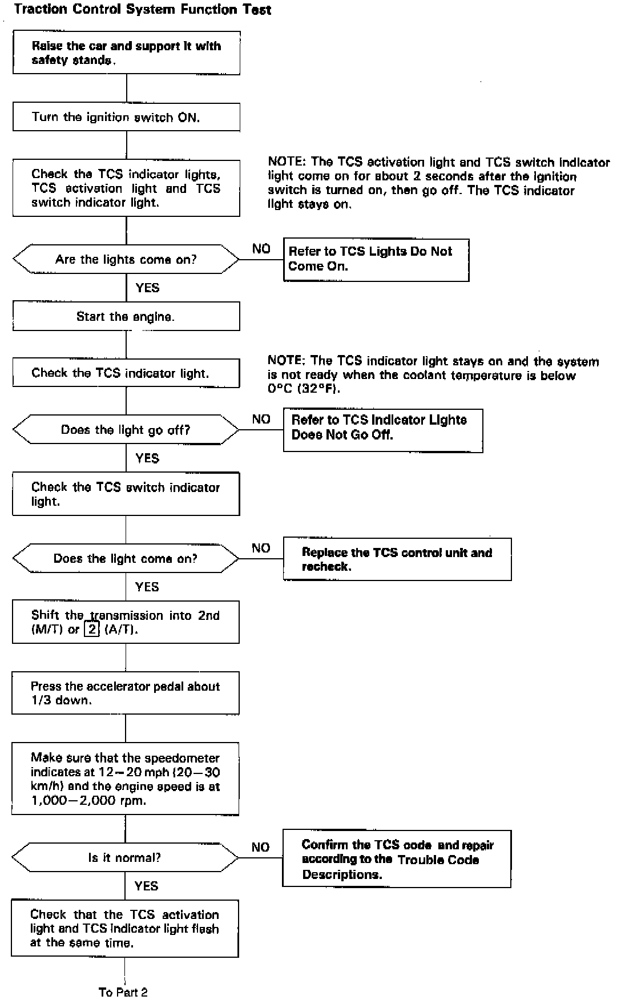
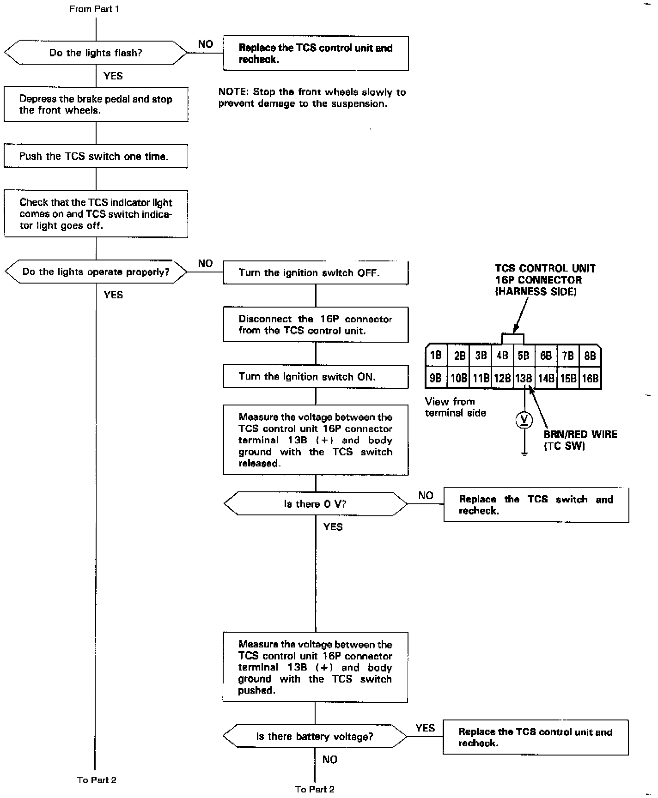
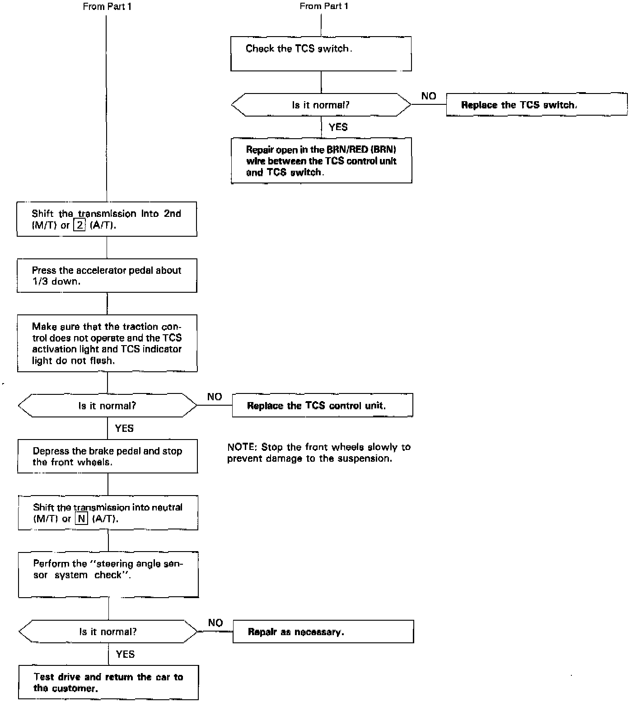

Operation CHARM
: Car repair manuals for everyone.
Home
>>
Acura
>>
1994
>>
Legend Sedan V6-3206cc 3.2L SOHC FI
>>
Repair and Diagnosis
>>
Brakes and Traction Control
>>
Antilock Brakes / Traction Control Systems
>>
Testing and Inspection
>>
Component Tests and General Diagnostics
>>
Traction Control System
Traction Control System


